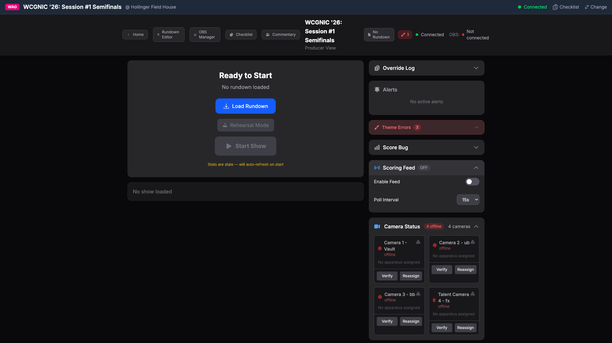
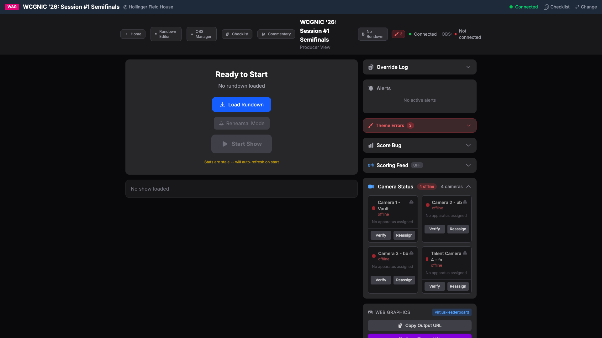
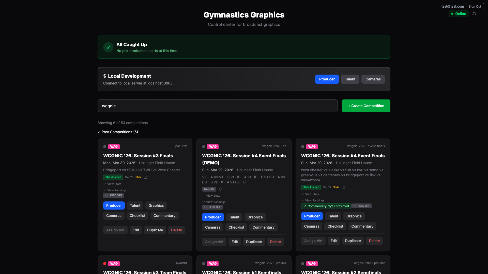
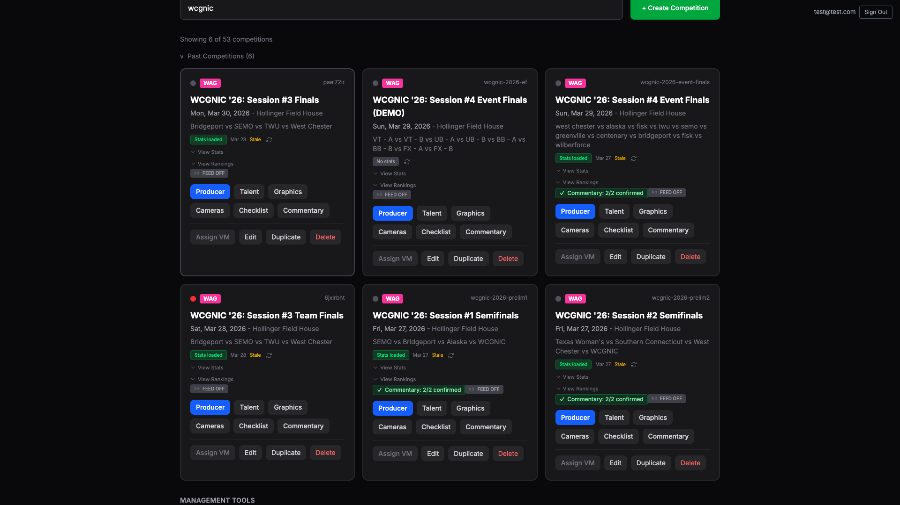

Renderer System: Scoring Ingestion - Production Verification
Core scoring ingestion service, Virtius API polling, Firebase writes, config listeners, auto-stop triggers, and server integration.
Producer View sidebar panel for scoring feed control with enable/disable toggle and poll interval dropdown.

ScoringFeedPanel integrated into Producer View sidebar after ScoreBugPanel.

Competition card badge showing scoring feed status with click-to-toggle functionality.

ScoringFeedBadge integrated into competition cards on HomePage.

Complete data flow verification from code to production UI.
PRD Phase Overview table needs to reflect Phase 3 completion status.
| 3 | Scoring Ingestion | ... | Phase-3-Scoring-Ingestion.md | NOT STARTED |
| 3 | Scoring Ingestion | ... | Phase-3-Scoring-Ingestion.md | COMPLETE - deployed 2026-03-31 |